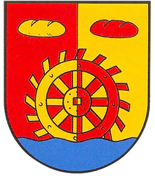

Die Gemeinde Tiddische
Chronik
Das erste Mal wurde der Ort Tiddische ungefähr im Jahr 1000 als Thiaddagsheshusun
bezeichnet, was so viel heißt wie „Die Häuser des Volks-Guten.“ Im Jahr 1366 bekam es
die amtliche Bezeichnung „Didgesche“, aus welcher sich der heutige Name Tiddische
entwickelt hat.
Hoitlingen hingegen wurde im Jahr 1510 erstmals als „Hoetlinge“ bezeichnet, was so viel
heißt wie „Leute am Teichdamm“ und der heutigen Bezeichnung bereits sehr nahe kommt.
Wie die meisten Ortschaften rund um Vorsfelde, gehörten Tiddische und Hoitlingen bis
1742 den von Bartensleben. Zu dieser Zeit befanden sich hier lediglich einige
Bauernhöfe. Bis heute hat sich die Einwohnerzahl auf ca. 1300 Bewohner entwickelt.
Erst im Jahr 1972 wurden die Ortschaften Tiddische und Hoitlingen zur Gemeinde Tiddische
vereinigt. Vorher wurden beide als eigenständige Gemeinden verwaltet. Seit 1974 ist die
Gemeinde Tiddische Mitglied der Samtgemeinde Brome.
Hallo Tiddische
Wenn Sie …
die Hektik der Stadt hinter sich haben Richtung Sonnenaufgang entlang der Bundesstraße
fahren
Am Wegrand summen Bienen
und Hummeln Fröhliche Hühner auf der Wiese tummeln
Kühe und Pferde die Sonne genießen Esel und Schafe neugierig grüßen
… dann sind Sie im schönen Dorf Tiddische, eingebettet im grünen Tal der kleinen Aller
zwischen den Naturparks Südheide und Drömling, mit dem Wahrzeichen des Glockenturms der
ehemaligen Schule.
Liebens- und lebenswert, traditionell und aufgeschlossen, unterhaltsam und sportlich,
natürlich und ländlich, gastfreundlich und musikalisch – das ist Tiddische.
Wappen
Von Rot und Gold gespalten, über blauem Wellenschildfuß, ragend ein benageltes Mühlenrad in verwechselten Farben, überholt balkenweis begleitet von zwei Brotlaibern in verwechselten Farben. Das Wappen repräsentiert die Wassermühle an der kleinen Aller, welche bis Ende der 1950er in Betrieb war.
Hoitlingen
Chronik
1388 wurde Hoitlingen im Ersten Gedenkbuch der Stadt Braunschweig indirekt erwähnt,
indem die Zahl von sieben Dörfern auf dem Vorsfelder Werder erwähnt wurde.
Der Name ist slawischen Ursprungs und bedeutet etwa „Leute am Teichdamm“, bezogen auf
die Lage in der Nähe eines Dammes und einer Brücke über die Kleine Aller, die hier zu
einem Teich verbreitert war. Die Lüneburger Heerstraße führte nordöstlich an Hoitlingen
vorbei.
Bis 1742 war das AdelsgeschlechtBartensleben Besitzer des Vorsfelder Werders. 1766 und
1856 verwüsteten Feuer große
Teile des Dorfes.
Die ursprüngliche Rundlingsform – allerdings in Form einer Sackgasse – wurde beim
Wiederaufbau aufgegeben.
1968 wurde eine Mühle im Nordwesten des Ortes stillgelegt. Im Osten des Ortes wurden
Neubaugebiete ausgewiesen. Das historische Zentrum Hoitlingens liegt in der Straße „Im
Unterdorf“.
Hoitlingen
eingebettet in Äcker, Wiesen und Wälder
liegt unser schönes Dorf am Rande des Naturpark Drömling
strahlt Ruhe und Gelassenheit aus.
Laut wird es nur wenn Feiern stehen
… und feiern können sie die Hoitlinger
Weit über die Grenzen bekannt sind die Faslam,
Mai- und Weinfeste um nur einige zu erwähnen.
Wer feiern kann, der kann auch arbeiten …
Dorfputz, Hilfe bei Veranstaltungen – kein Thema.
Viele fleißige Hände sorgen dafür,
dass das Dorf strahlt und jede Feier zum Highlight wird.
Hoitlingen – ein Dorf – eine Gemeinschaft
Infrastruktur
Die Hoitlinger Schule wurde mit der Einrichtung einer Dörfergemeinschaftsschule in Rühen
in den 1970er Jahren geschlossen.
Im Ort befindet sich ein Friedhof mit Kapelle. 1971 gab es 29 landwirtschaftliche
Betriebe in Hoitlingen, 1985 noch 18.
Sprechzeiten des
Bürgermeisters
Montag im DGH Hoitlingen
18:15 - 19:15 Uhr
im Bürgerhaus Tiddische
19:30 - 20:30 Uhr
Öffnungszeiten
Gemeindebüro
Montag, Dienstag und Donnerstag
8:00 - 12:00 Uhr